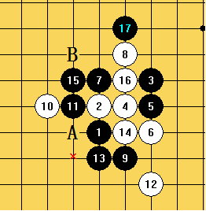
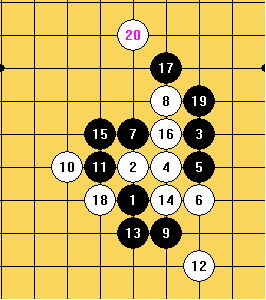

2011 年全团赛小结
时间有限 直奔主题吧~

这个10手，是最近网上比较流行的一个下法 。个人感觉白棋比黑棋好下一些。
10手以后黄金贤开始长考 。行棋到17手，都是比较正常的点。18手也有几个点可以选择 ，
当时选择了B点的变化 。比赛完回去看了下，发现A点的变化也不错 。如下图

交换到20手以后，黑棋已经被白棋上下分开。21的最好选择，应该是左上交换一下，
然后到右下补防。（上图）/*760*90，创建于2012-2-9*/ var cpro_id = 'u761865';


多送几朵以感谢对老奶奶的照顾。